这份教程按「准备工作 → 内容生成 → 助手与工作流 → 开发节点 / 会话 / 长任务 → 工具函数 / 素材库 / 专家团 / 社区」的顺序展开，与画布上的「快速开始」画布内容一一对应。每一章都可独立阅读，第一次使用时建议按顺序走一遍。
1. 准备工作
MTNode 本身永久免费，但它调用的 AI 模型由各家平台按用量计费。所以第一步是：注册一个服务商 → 拿到 API Key → 填进 MTNode，这一步只做一次。
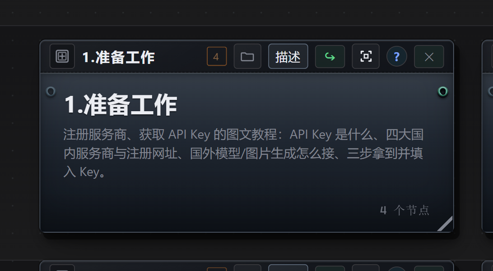
1.1 API Key 是什么（AI 的会员卡）
API Key 可以理解为「向 AI 大模型提供商付费的会员卡」。你在官网注册账号、充值购买额度后，平台会给你一串字符（一般长这样：sk-xxxxxxxx），这串字符就是 API Key。
把它填进 MTNode 的设置中，就能调用该提供商的模型：你每用一次，平台按用量从余额里扣钱。所以它本质上是「你的账号 + 你的钱」的凭证，和银行卡账号加密码一样敏感。
1.2 国内四大服务商（四选一即可）
- DeepSeek（深度求索） — platform.deepseek.com
- 通义千问 Qwen（阿里云百炼） — bailian.console.aliyun.com
- 智谱 GLM（BigModel） — bigmodel.cn
- Kimi（月之暗面 Moonshot） — platform.moonshot.cn
当前建议：现阶段只用 DeepSeek 就足够了——性价比极高、速度很快、中文与代码能力第一梯队、注册门槛低，对新手也最省事。其余三家可以先注册放着备用。
通用流程：注册账号（手机号 / 邮箱）→ 实名与充值（多数平台有新用户赠送额度，可先免费试）→ 进入「API Keys / 密钥管理」页面 → 新建 Key → 复制并立即保存。注意：Key 通常只在创建时完整显示一次，关掉页面就看不到了，只能重新创建。
1.3 要用国外模型 / GPT 图片生成怎么办
国内网络直连国外大模型（尤其是 GPT 系列图片生成模型）通常不方便，这时可以用聚合平台「API易」：api.apiyi.com。
- 聚合平台的作用：用一个账号、一个 Key、一套 OpenAI 兼容接口，帮你转发调用多家模型，不用自己解决网络问题。
- 在 MTNode 里的用法：打开「模型服务」设置 → 新增服务商 → 按官方文档填 Base URL（例如
https://api.apiyi.com/v1）与 API Key → 就能选到对应的国外文本 / 图片模型（例如gpt-image-2.5-all）。 - 图片模型需要单独创建一个服务商，并把类型选为「图像 · OpenAI 兼容」。
提到 API易 只是使用习惯，不是广告、也没有收取推广费用，你可以自行选择其他同类平台。聚合平台同样按量付费，注意余额与用量上限，Key 一样绝不能外传。
1.4 三步拿到 Key 并填进 MTNode
- 注册：打开上面任意一个注册网址（例如 DeepSeek），用手机号或邮箱注册并登录。
- 充值 / 领额度：可先少量充值（例如充 10 元试水）。
- 创建并保存 Key：进入「API Keys / API 密钥」页面 → 点「创建 / 新建」→ 复制那串
sk-开头的字符 → 先粘贴到本地记事本或密码管理器保存好。
填进 MTNode：打开应用「设置 → 模型服务」→ 选择或新增服务商（DeepSeek 官方）→ 把 API Key 粘贴进 Key 输入框 → 保存。之后在节点里选择该服务商的模型就能用了。
2. 内容生成
这是画布上用得最多的一章：文本、图像、音乐、语音、视频、Remotion 合成、文本审阅、图像蒙版共八个区块，加上智能任务。每组都包含「节点说明 / 多种用法 / 示例接线与参数速查」，接线套路基本一致：上游给输入 → 生成节点跑一次 → 下游接保存节点落盘（音视频节点自带输出路径，不用再接保存）。
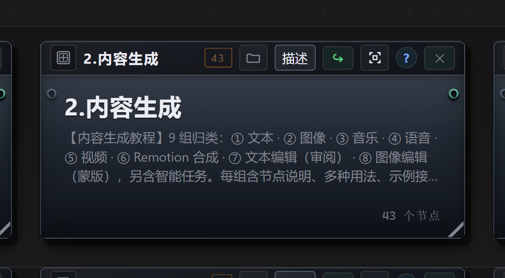
2.1 文本处理：最常用的生成节点
把上游的文字（提示词、文章、表格内容）交给大模型，输出新的文字。它有两个模式：
- 普通模式（默认）：一次请求换一次结果，稳定、便宜，结果可直接接「保存文本」落盘。
- 智能模式：把这个节点当成一个小 Agent，它能自己读文件、写文件、多步完成任务；因为会自己读写，后面一般没必要再接「保存」节点。
- 提示词
- 写清「要做什么 + 输出什么内容」，可以用
@节点标题引用上游连进来的内容。 - 模型 / 思考强度
- 点上方设置可换模型；思维强度决定模型的思维链长度——越高一般质量越好、Token 越贵，实际用低或高即可。绝大多数任务选 flash 级模型就够，长文推理、复杂抽取再换更强的。
五种常见用法：
- 润色与改写：上游接一段原文 → 提示词「把下面的文字润色成口播稿，保留全部事实：@原文」→ 输出接「保存文本」。
- 翻译：提示词「把 @中文 翻译成英文，只输出译文，不要解释」，结果存
.txt/.yaml。 - 结构化提取：提示词「从 @正文 里抽出人名、地点、时间，输出 YAML」→ 输出可被下游节点直接解析。
- 模板约束输出：提示词里给 JSON / YAML / Markdown 模板，让模型按模板填空，方便程序处理。
- 智能体模式（点节点上的鲸鱼图标开启）：需要查资料、读多个文件、写一份完整文档时用它，产出一般是文件。
2.2 图像生成：文生图 / 图生图 / 局部重绘
图像生成节点用来出图和改图：文生图、图生图、局部重绘、透明底成品，都在同一个节点上完成。
- 尺寸
- 从画布可选尺寸里挑，竖版 / 方版 / 横版都有；默认 2048x1360（横版）。
- 参考图
- 接在节点的图像端子（端口 1+），不是提示词端口。
- 抽卡次数
- 同一提示词多跑几次挑最好的，1–10 次。
四种用法：
- 文生图：上游接一段提示词 → 输出接「保存图像」，自动存成
.png。 - 图生图：把参考图（图像输入节点，或上游刚生成的图）连进图像端子，提示词写「保持主体与构图，把背景换成…」。
- 局部重绘（蒙版）：打开节点头部的「蒙版」，在蒙版编辑器里亲手涂出要重绘的区域（透明区 = 重绘），只对第 1 张参考图生效 —— 详见 2.8 图像编辑（蒙版）。
- 透明底成品：模型支持时直接在模型选择处打开「背景 · 透明」；否则打开节点的「透明背景」开关，用差分算法生成（约 2 倍 Token）。
2.3 音乐生成（MiniMax Music 3）
调用 MiniMax Music 3 生成整首歌或纯音乐，产出一个音频文件。
前提：需要先在本机安装并启动 MiniMax Music 3 后端（建议 24G 显存级别），在上方菜单栏的插件里打开进行安装配置；后端没起来会直接报错。
- 提示词
- 只写曲风 / 情绪 / 乐器 / 编曲 / 人声特点，不写歌词。
- 歌词
- 按结构标签写：
[Intro] [Verse] [Pre-Chorus] [Chorus] [Bridge] [Outro]；每行 12–20 字、押韵，副歌重复同一句钩子。歌词留空 = 纯音乐。 - 输出路径
- 节点自带输出路径，例如
…/assets/music/曲名.mp3（.mp3/.wav）。 - 抽卡次数
- 1–10，建议 3–5 抽。
接线：文本（歌词）与文本（风格）→ 音乐生成节点 → 音频文件。不需要接「保存」节点，音频由节点自己的输出路径直接写出。
用法上，一首完整歌曲按上面的结构标签写歌词、提示词只写风格（例：city pop，清澈女声，复古合成器，中速）；纯音乐 / BGM 则把歌词留空、提示词写清情绪与乐器。
2.4 语音合成（GPT-SoVITS）
把文字转成语音，基于 GPT-SoVITS 本地后端，输出 .wav 音频。
- 音色
- 本机音色库里已有的音色名，需提前训练；留空 = 默认音色。
- 语速
- 0.5–2.0（1.0 为原速）；口播 1.0–1.2 更精神，抒情 / 旁白 0.9 更耐听。
- 输出路径
- 节点可直接写入文件，例如
…/assets/tts/第01段.wav。 - 抽卡次数
- 同一段可以多抽几次，挑最自然的一条。
接线：文本（台词）→ 语音合成 → 音频文件，同样不需要接保存节点。
- 短视频口播：上游接文本节点写好的解说稿。
- 多音色对话：把剧本按角色拆开，分别接不同音色的语音合成节点，得到一问一答的对话音频。
- 先改稿再配音：文字先让文本节点按「适合朗读」的短句改写，再送进语音合成。
2.5 视频生成（MiniMax H3）
用 MiniMax H3（ComfyUI 后端）生成视频片段，输出 .mp4；需要在插件界面先启用后端。
- FL2VA 首末帧：给首帧图、可选末帧图，中间运动由模型补全，用来控制画面的起点与落点。
- R2V 多参考：给多张参考图控制角色长相与场景，做角色一致性。
- 时长 / 分辨率
- 时长 4–15 秒；输出分辨率可选 480p / 720p / 1080p。
- 后处理
- 超分与补帧能提升观感，但很吃显存，24G 显存建议关闭。
- 抽卡次数
- 同一组输入多抽几次挑最合适的一条。
2.6 Remotion 合成：把素材拼成视频
Remotion 合成不是「逐帧生成」，而是用代码把文案、图片、音频按时间轴拼起来 —— 比逐帧生成更快更稳，适合做字幕视频、图文卡片、数据动画、片头片尾。
接线：文案 / 图片 / 音频 → Remotion 合成 → 保存（.mp4）。
- 分辨率
- 1920x1080（横版）/ 1080x1920（竖版）/ 1080x1080（方版）。
- 帧率 / 时长
- 帧率 24 / 30 / 60；时长 1–60 秒。
- 落盘方式
- Remotion 节点没有自己的输出路径，必须由下游「保存」节点落盘，路径以
.mp4结尾。
2.7 文本编辑（审阅）
单次生成的文本很难完全满足要求，「审阅」让你在 AI 生成之后，对已有文本做手动修改、AI 全局编辑和 AI 局部编辑，用于纠错、润色、扩写、语法检查等。
怎么用：生成一次文本后，在右侧输出框点击「审阅」按钮进入审阅界面。全局批注用于总体修改意见；局部批注先点上方「局部批注」按钮打开该功能，然后框选需要局部修改的内容即可。定稿后照常接「保存文本」落盘。
2.8 图像编辑（蒙版）：只改一小块
图像生成节点除了整张重画，在模型允许蒙版编辑时可以只改一小部分：在节点上涂抹出要重绘的区域（蒙版），其余像素在生成时保持不变。该功能并非每个模型都支持，但即便不支持，MTNode 也会对蒙版外的内容做固定，通常也能达到需要的效果。
- 上游接一张图像（图像输入节点 / 素材 / 上一张生成结果）。
- 打开节点上的「蒙版」开关。
- 在节点头部的蒙版编辑器里涂出要重绘的区域（透明区 = 重绘），然后运行。
典型场景：换掉局部（换一件衣服、把背景杂物擦掉换成墙面）、加一处元素（在桌面加一杯咖啡、给招牌补一行字）、修瑕疵（多余的手指、反光、水印）。
2.9 智能任务与 PDF 输出
- 智能任务节点：给它一段任务描述，它自己读文件、联网搜索、多步完成并写出文件。适合「读多个文件 → 汇总成一份文档」这类活，产出直接落盘，人工再验收。
- PDF 生成节点：把定稿文本导出成 PDF（例如
文本审阅示例.pdf），适合交付、打印与存档。
3. 全局助手与工作流
这一章演示如何用右侧的全局助手一句话自动搭出可编辑、可一键重跑的内容生成管线 —— 你不用手工拖节点，助手会在当前画布上建节点、连线并排版。章内自带 5 条可直接运行的示例。
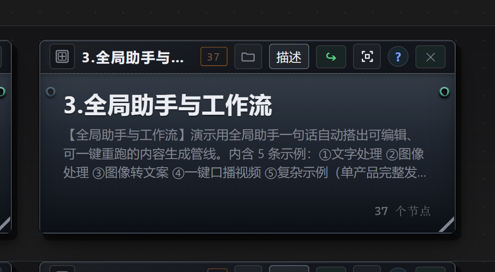
3.1 一句话让助手搭工作流
- 点击右侧栏的 ◆ 按钮打开全局助手，说「为我生成一个工作流」（或输入
/、、调出「生成工作流」工具）。 - 说清输入是什么（一段文字 / 一张图 / 一个文稿文件 / 一段产品资料）、需要做什么处理。
- 助手直接在本画布建节点、连线、排版；你只需改输入、点控制节点 ▶。
- 除非明文要求，全程一般只做新增、不改动你已有的节点；不满意随时
Ctrl+Z撤销。生成工作流没有数量上限，甚至可以用来拆解一部小说。
一句话示例：
/generate-workflow 用这段文稿生成一条带字幕的口播视频工作流：
使用文稿生成口播稿，然后生成语音，最后合成 Remotion 视频，保存为 mp43.2 章内 5 条示例
- ① 文字处理：原文 → 改写口播文案 → 保存
- 最基础的三节点管线：一个可编辑的原文输入 → 文本处理节点改写 → 保存为
.md。 - ② 图像处理：提示词 → 文生图 → 保存配图
- 提示词输入 → 图像生成 → 保存
.png，配一个控制节点 ▶ 一键重跑。 - ③ 图像转文案：识图 → 社媒文案 → 保存
- 把一张参考图交给文本节点「先看图再写文案」，产出小红书风格的社媒文案。
- ④ 一键口播视频：文稿 → 口播稿 → TTS 语音 → Remotion 字幕视频 → MP4
- 一条完整链路：文稿改写成朗读稿 → 语音合成 + 字幕与画面描述 → Remotion 合成带字幕竖屏视频 → 保存 mp4。
- ⑤ 复杂示例：单产品完整发布包
- 只给一段产品资料，一次生成：800 字长介绍 + 社媒短文案 + 横版主视觉 + 方版细节特写 + 15 秒短片分镜 / 画面提示词 / 竖版首帧图 + TTS 配音 + H3 短片，共 18 个节点 / 33 条连线 / 7 个产物 —— 手工配置代价最高的那条。
3.3 这些示例怎么跑
- 每个示例区块里只需要改标着「可编辑」的输入节点（原文 / 提示词 / 文稿 / 产品资料）。
- 点该区块的控制节点 ▶ 一键重跑整条链 —— 控制线不走数据，所以只影响你指定的节点。
- 产物统一落在画布工作目录的
output/下，文件名就是各「保存」节点上写的路径。 - 画布上还有橙色提示：双击超级节点即可浏览该章节的完整说明与示例。
4. 开发节点
开发节点 = 把「软件项目」拆成画布上的一颗颗功能块（超级节点），每颗块负责一个模块 / 文件 / 类。块上写着这个模块干什么、怎么实现、涉及哪些文件；点开卡片上的按钮，就能让 Agent 去调研、开发或细化。
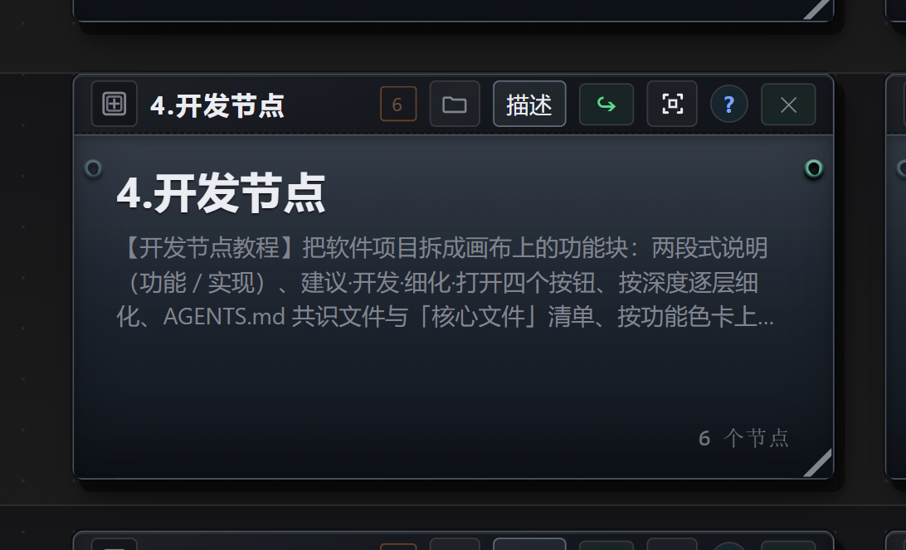
4.1 是什么、适合什么场景
开发节点是带「开发」标记的超级节点：外观和普通超级节点一样，内部装的是「这个模块干什么、怎么实现、涉及哪些文件」。
- 作为人和 AI 交互的锚点：讨论或修改项目代码时，不必用语言去描述目标功能块，直接指着块说。
- 一块一会话：每块的调研 / 开发都在自己绑定的会话里跑，上下文互不污染。
- 可以按图施工：块上填好模型、预设、思考强度，点「开发」就按这张图开工；在正确的节点上开发，能省 Token 和 AI 搜索项目的时间。
适合：新项目从零搭架构、老项目逆向梳理、把一个大需求拆成能并行开发的模块。不适合：只写十几行的脚本、或纯文案任务 —— 直接开一个会话更快。
4.2 四个按钮与推荐动线
- 建议
- 先让 Agent 调研这块、给出方案，你确认后再动手（不确定的地方它会先问你）。
- 开发
- 按你确认的方案真正动手：建目录、写文件、跑验证，产物落在本块的「项目根目录」。
- 细化
- 把当前块往下拆一层（模块 → 文件 → 类 / 接口 / 枚举），可调整下钻深度。
- 打开
- 只有文件节点有：在应用内的 Markdown 阅读器里查看 / 编辑本块文件。
推荐动线：① 按确认后的架构逐块「开发」→ ② 每块做完「细化」露出它的文件与类 → ③ 收尾回写「核心文件」清单、更新 AGENTS.md。
另外，画布左侧边栏可以切换为「文件」，切换后能访问画布目录或项目目录的内容，并允许查看和编辑。
4.3 AGENTS.md 共识文件与「核心文件」清单
在项目根会生成一份共识文件 AGENTS.md，包含目录约定、不要修改清单，以及所有需要 AI 全程遵守的约束 —— 项目内每个会话开工前都会读它。第一层开发节点中一般还会生成 agent.md 的入口文件节点，可直接在应用内阅读 / 编辑 / 保存。
回写纪律：每个功能块收尾都要在「核心文件」里补写本模块真实产出的文件（最多 10 条、相对项目根）。
4.4 配置速查
- 项目根目录
- 项目根的绝对路径。最外层块填一次，子块就近继承；项目根就是 Agent 的工作区根。
- 所属上层
- 这块挂在哪一层，由它所在的超级节点决定。
- 元素类型
- 模块 / 文件 / 类 / 接口 / 枚举，决定块的性质。
- 模型 + 路由
- 本块会话用哪个模型（建议 / 开发 / 细化都用它）。
- 预设档
- 极简模式 / 标准模式 / 思维精简 / PTC 模式 / 创造模式，决定人设与工具面。
- 思考强度
- 轻 / 标准 / 强 / 最强 —— 界面回显即实际下发。
- 外框颜色
- 按功能色卡取：核心运行时 / 画布与交互 / AI 与 Agent / 数据与存储 / 媒体与本地后端 / 插件与生态 / 构建与诊断 / 测试与质量。
- 状态
- 待开发 / 进行中 / 已完成，用来标记块进度。
- 核心文件
- 本块核心文件清单（≤10 条、相对项目根；最外层项目块不填）。
- 关系线
- 块与块之间的调用 / 依赖用关系线表达，它不传数据、不参与执行。
4.5 从哪开始
从零开始一份新项目：
- 在画布点击右键，告诉右侧栏助手你的目标：「用 X 语言做一个能做 Y 的东西，帮我搭开发节点架构」—— 不确定的地方它会先问你。
- 助手扫一遍目标 / 现有目录，先给出覆盖全项目的架构骨架（顶层项目块 + 各模块块）和项目根的
AGENTS.md。 - 你逐块点「建议」看方案、点「开发」开工；每块做完点「细化」往下钻一层。
- 每块收尾检查两件事：「核心文件」清单是否写了、
AGENTS.md是否更新。
从已有项目开始：在画布点击右键 → 选择「构建工作流」→ 使用「开发节点架构师」并写入项目目录，由 AI 扫描目录，按真实目录结构生成功能块（模块 → 文件 → 类），标注每个块的职责与核心文件。
5. 会话
会话 = 一次和 AI 的连续协作。侧栏助手、智能节点、开发节点按钮背后，跑的都是会话。三条要点：
- 会话有状态：它记得之前说过什么，所以「接着改」比重新描述一遍更省事；但冗余的会话反而会浪费 Token 和时间。
- 会话有开关：模型、预设档、思考强度、工具许可，都可按需求配置。
- 会话能读写文件、上网搜索：所以能做很强大的事，也存在失误造成严重后果的风险 —— 重要目录请先备份，工具许可按需开。
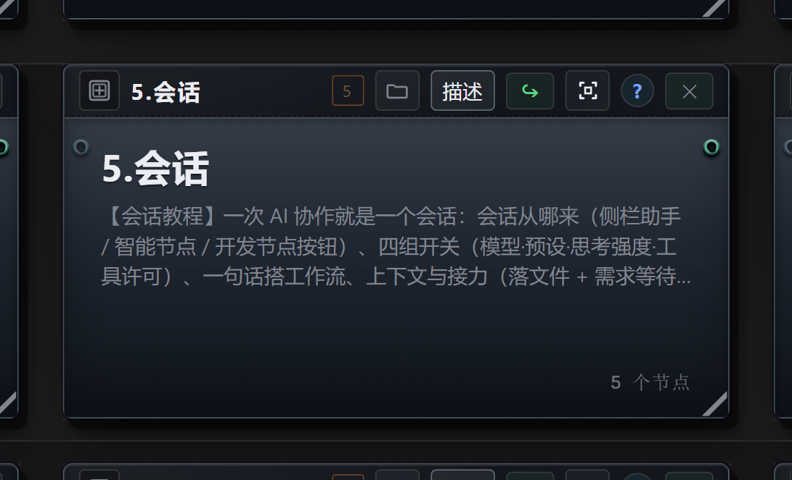
5.1 四个入口与怎么选
- 全局助手（✦）
- 能看并改你眼前的画布 —— 一句话搭工作流、整理排版、新建节点。主要用于画布操作，一般会禁止编辑本地文件。
- 智能节点（智能任务节点、开了智能模式的文字处理节点）
- 每次运行在内部展开一个会话，适合「读文件 + 多步 + 写文件」的活，活动范围不超出画布项目文件夹。
- 开发节点的开发 / 细化
- 在块绑定的新会话里运行，只服务于该项目文件夹（但允许读取项目外的内容），适用于绝大多数开发任务。
- 全屏会话
- 与 Codex 使用方式相近的通用入口，写程序、做软件项目时直接用。
怎么选：一次问答、结果要落盘 → 普通文字处理节点；通过画布处理较复杂的任务、需要自动读写文件 → 智能节点；要改画布本身 → 右侧栏助手；程序 / 软件开发 → 直接用会话，或点开发节点的「开发」按钮。
5.2 四组开关与审批
- 模型：flash 级够绝大多数活；长文推理、复杂抽取、写代码换更强的。
- 预设档：决定 AI 人设、带哪些能力；开发任务一般使用「精简」。
- 思考强度：off / low / high / max。越高通常质量越好、Token 越贵；日常 low 或 high 就够。
- 工具许可：允许用哪些工具 —— 读写文件、联网搜索、画布编辑、提问、识图。一般任务建议关闭识图，否则 AI 可能频繁截图确认、浪费 Token。
- 审批：改画布、删画布、装插件这类动作会单独弹窗询问；写工作区文件、联网搜索按当前预设放行。
5.3 常见误区
- 避免一个会话干所有事：上下文越多越杂，消耗越高越贵，尽量按任务拆分会话。
- 会话读不了文件 / 上不了网导致任务做不完，先看是不是工具许可没开。
- 思考强度日常 low / high 足够，max 一般只在搭建新项目、涉及架构设计时用，并配合更强的模型。
5.4 其他功能
- 思考翻译：思考内容大多是英文，想溯源问题时点右侧「思考」，会调用无思考的 DeepSeek（默认）翻译。
- 工具参数显示：会话中显示工具调用日志与调用详情。
- Token 报告：最下方显示本次会话的 Token 消耗与费用（仅限 DeepSeek）；费用为估算，最终以官网统计为准。
6. 长任务
长任务用于处理高复杂、需要人机反复交互的任务，例如网页 / 游戏开发、文章写作。它的产物是一张状态机流程图，跑起来以后会停下来等你审批、交付，再继续往下走。功能仍在测试中。
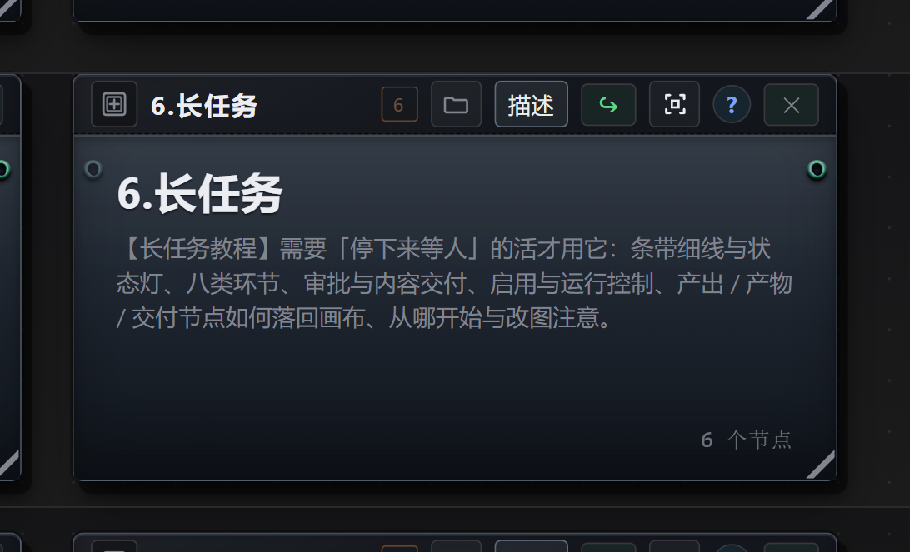
6.1 创建与基本形态
- 创建时：AI 会通过反复问询，确保覆盖任务的细节。
- 创建后：成为一张流程图（状态机），点 ▶ 启用并绑定 才开始跑。
- 运行中：AI 会在下方画布中生成任务相关内容进行展示；涉及内容生成时只建工作流，等你去验收执行。
- 需要人工介入时：会生成交付节点等你提供；未提供也能继续，可以向 AI 说明理由由它调整，或者驳回该轮次、让这一步迭代。
6.2 细线与状态灯
菜单条与画布之间有一根细线：鼠标放上去会亮，往下拖就展开 —— 上方那块空间就是长任务的状态机编辑器 + 实时视图；往上推回或双击细线即收起。
状态灯：闪橙 = 运行中；黄 = 等待处理（审批 / 交付）；红 = 卡住或失败；绿 = 跑完。
状态图上的环节可在空白处 / 节点上 / 连线上右键添加，选中后按 Delete 删除。不建议手动修改，整个状态图交给 AI 创建即可。
6.3 审批与内容交付
- 审批（通过 / 驳回）
- 条带右栏列出「等你处理」的卡片，填意见后 ✓ 通过继续、✗ 驳回退回你指定的环节重做。驳回必须写理由，理由会写进共享状态，上游 Agent 下一轮能读到。
- 内容交付（按清单交付文件）
- 文件可以上传，也可以在画布上把上游节点连到交付节点；缺件也能继续，但建议写清原因。
6.4 启用与运行控制
- 长任务建成后，点 ▶ 启用并绑定 开始跑；启用即拍一张图快照，之后改图不影响正在跑的这一次。
- 一张画布同一时刻只有一个启用中的长任务；应用重启后会恢复到中断现场。
- 任务切换、新建、历史 run、交付目录体检都在条带右端的 ⚙ 里。
6.5 产出与落点
创建任务时会同时在主画布上建一颗超级节点壳「长任务 · <任务名>」；每个环节在它内部再创建一颗子壳。产出节点与产物节点都落在对应环节的子壳里，不占主画布。
产出节点：每个环节生成的信息与文件内容会同步写进「产出 · <环节名>」，正文可直接编辑（✎ 内置 Markdown 编辑器）。交付类环节会自动在画布上生成交付节点 —— 该类型不能手动添加，也不必添加。
7. 工具 / 函数节点
这两个节点用来「把逻辑做成可复用的节点」，也可以通过内网调用应用以外的程序接口（例如 Python 应用或物联网应用）。一般通过全局助手委托 AI 来实现即可，不建议手动编写。功能仍在测试中，请谨慎使用。
- 函数节点：直接写 JS。输入 = 上游传来的参数，输出 = 返回的结果。
- 工具节点：把参数（端子）定义清楚，再把这项能力注册出去，让会话按需调用它。
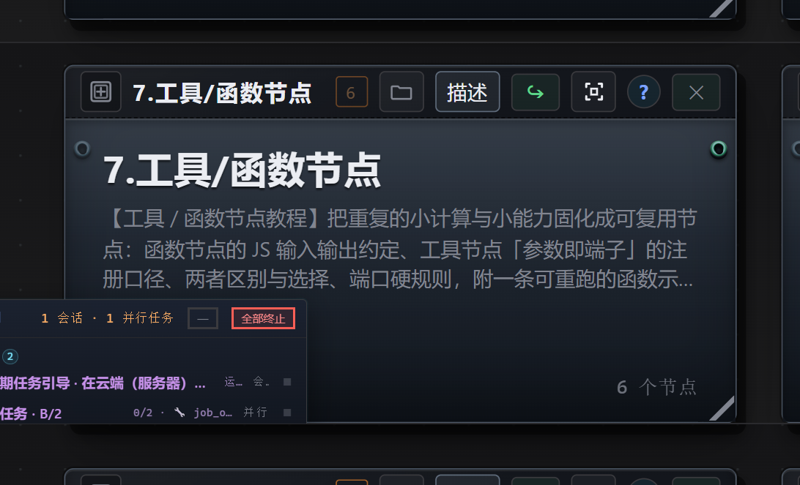
7.1 端子规则（两个节点共用）
参数表就是端子表：加一个参数就多一个端子。输入端子 0 = 控制入，1..N 依次是各入参；输出端子 0..M-1 是各出参，末位是控制出。
7.2 函数节点的 JS 约定
- 入参：
input = { 参数名: 值 }；图像类参数是{ kind: "image", path }。 - 出参：
return { 输出名: 值 }，键名要和输出端子表一致。 - 用它跑脚本和确定性运算，可以实现很多大语言模型不擅长的内容、替代模型的一部分工作，或调用其他程序接口。
const s = String(input["文本"] ?? "");
const lines = s.split(/\r?\n/).filter((l) => l.trim().length > 0);
const chars = s.replace(/\s/g, "").length;
const longest = lines.reduce((m, l) => Math.max(m, l.length), 0);
return { "统计结果": `字符数(不含空白)：${chars}\n非空行数：${lines.length}\n最长行：${longest} 字` };7.3 工具节点：把能力注册给会话
- 名称 / 用途说明：AI 靠说明判断什么时候用它，要写清「什么时候用 + 输入什么 + 输出什么」。
- 输入 / 输出端子表：就是它的参数与返回值；端子类型（text / image）决定能不能相接、下游怎么选型。
- 用在哪：把工作流固化成工具，在会话里复用（工具节点 = 超级节点 + 多个函数节点及其他节点的封装）。
7.4 示例链：文本统计（可重跑）
章内示例是三个节点的一条短链：待统计文本（可编辑） → 文本统计函数 → 保存统计结果，产物落在 output/函数节点示例_文本统计.md。把示例文本换成你自己的，点函数节点上的 ▶ 重跑即可，它会算出字符数（不含空白）、非空行数与最长行长度。
8. 素材库
素材库是画布之外的「仓库」，放你的图片、音频、视频等原始材料；生成节点做好的图、音、视频也可以回流进去反复使用。入口在上方菜单栏「素材库」。
关键差异：素材库的项目路径独立于画布与项目，可以跨项目、跨画布使用；路径固定，画布或项目被删除也不会丢失文件（而直接拖进画布的输入节点是随画布走的）。
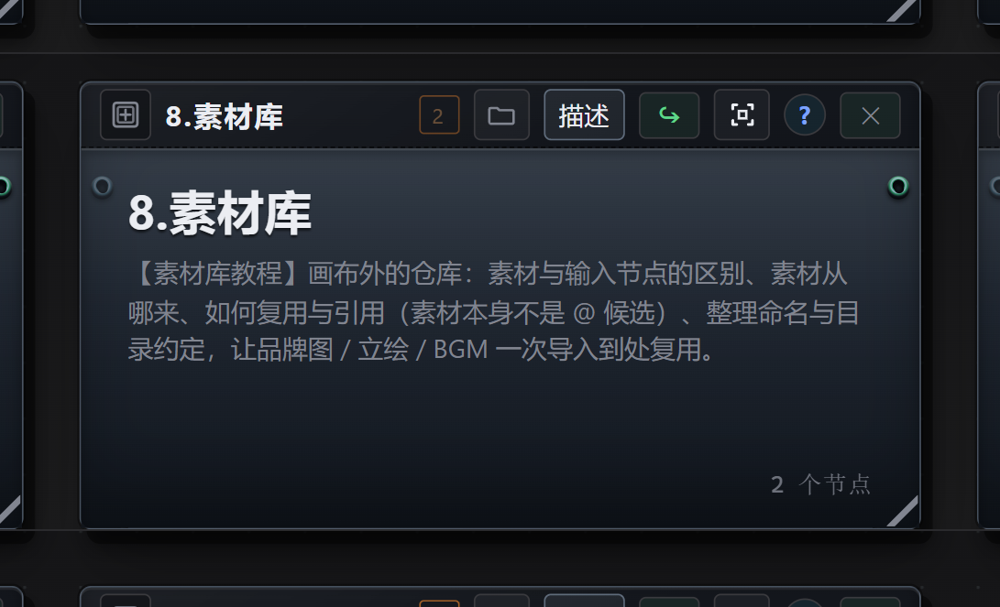
8.1 导入素材
- 在素材库界面里设置根目录文件夹，然后创建新素材。
- 也可以把本机文件直接拖进画布使用（这种属于画布内的输入节点）。
- 建议按「用途 / 名称」整理目录，让品牌图、立绘、BGM 一次导入、到处复用。
8.2 引用素材
- 把素材从素材库选中后放置到画布中供引用。
- 在画布内用拖动连线把素材接到下游节点，再在提示词里用
@引用。 - 素材库内可按名称 / 类型检索。
- 注意：素材节点本身不是
@引用候选，能引用的是已连线接进本节点的端子。
9. 专家团
给一张画布配一队 AI 专家，围绕这张画布展开单聊或群聊，让多位专家各说一遍，再形成汇总建议。入口是顶栏「专家团」视图 —— 团队绑定当前画布，标题显示当前画布名，切画布即自动换团队上下文。
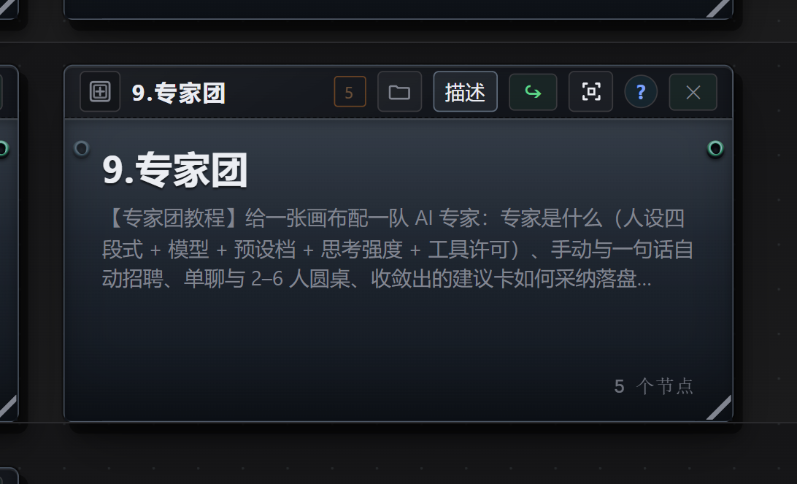
9.1 是什么、和别的入口有什么不同
专家团允许你赋予 AI 多个身份，并站在该身份的立场和知识体系与你对话。同一个问题给不同的专家往往会有完全不同的回答，比一般性的问答涵盖面更广。
- 全局助手：单个会话，适合任务流水线和画布编排。
- 开发节点：按模块拆分、迭代项目，适用于程序开发。
- 专家团：同一件事让多个不同「人格」提建议；默认只读写文本，不干涉项目或画布。
它还有三样配套能力：会话留痕（讨论收敛后可归档为事实库）、有据可查（回答事实性问题会先查本团队的事实库）、收敛成建议（群聊后由 AI 主持人把会议内容写成文档）。
9.2 组建专家
手动招聘：进顶栏「专家团」视图 → 左栏上方点 ＋ 招聘 → 从模板库选一个（内置 39 个预置角色，如研究分析师 / 代码评审员 / 产品经理 / 财务顾问），或从空白开始 → 填名称、岗位、图标 → 在右侧「模型」区选服务商 / 模型 / 思考强度 / 预设档 / 温度。
一句话自动招聘：在对话框里说清用人需求，例如「我要一个盯现金流的财务顾问」。HR 会生成一张严格 JSON 角色卡，本地校验（必填 / 长度 / 禁写项 / 工具许可 / 图标合法）通过、你点「确认录用」才写入；校验失败或取消都不落库。录用后会顺手存进模板库，下次一键套用（角色卡是按需求完全重新生成的，不会套用现有模板）。
人设四段式：身份 Identity / 目标 Goal / 约束 Constraints / 输出格式 Output —— 加上模型、预设档、思考强度与工具许可，构成一位专家的完整智能体身份。
默认权限：读文件、写文件、联网搜索、反问用户；执行命令为逐项审批。标题右侧的「复制」可把当前画布的团队增量复制到另一张画布：只追加，不删除、不覆盖目标画布已有内容。
9.3 单聊、圆桌与建议卡
- 单聊：左栏点一位专家直接对话；角色行右侧 ＋ 可给他新开一段对话。
- 圆桌（群聊）：会话区 👥 新建群聊，选 2 位以上参与者（不建议一次选太多人，避免 Token 浪费）。每一轮由每位专家依次独立发言、各用自己的模型；第 1 轮互不可见，避免互相锚定、复读。可以 @某位专家 定向提问。
- 收敛出建议：点「收敛出建议」，由主持人只做结构化聚合、不新增观点，产出一张建议卡：结论 / 理由 / 依据 / 少数意见（原文保留）/ 未收敛分歧 / 待验证假设 / 下一步。
9.4 采纳与落盘
建议卡在采纳前不写任何文件。点采纳才落盘：
- 采纳并生成待办 → 追加到
<工作区>/advice/TODO.md - 采纳为决策记录 → 写
<工作区>/decisions/DEC-YYYYMMDD-NN.md（状态 = 已确认） - 仅存档 → 不写任何文件
- 讨论过程中的建议文件落在
<工作区>/advice/ADV-*.md
9.5 团队事实库
事实库保存这个项目的「事实来源」，让专家回答事实性问题时有据可查。入口不在画布上，而在专家团视图左栏「专家」列表末尾那一行。
- 新建文档：点库行常显的 ＋；专家在对话中发现稳定事实也会自动建档 / 改档，即时出现在左栏。
- 清单：下方列出文档名与更新时间，点一行打开审阅窗。
- 专家怎么查：事实库会把每篇文档的名称与路径告诉专家，由它自行决定是否查阅。一般是：先读最相关的事实库文档 → 不够再查项目内容 → 仍不够会以「事实库中没有该信息」为由请求补充。
- 文件在哪：
<画布项目文件夹>/团队事实库/，每篇文档三个文件：<文档名>.md（正文）、<文档名>.review.json（审阅记录）、共享assets/。删除会移入系统回收站，可在资源管理器还原。
10. 社区（工坊 / 讨论区）
MTNode 的社区由两块组成，入口都在顶栏：创意工坊（浏览 / 下载别人公开的模板画布与技能，登录后可上传与管理自己的条目）与讨论区（话题与回复，免登录浏览、登录后可发话题回帖）。两者共用同一个 MTNode 账户（微信扫码登录，旧账号可用密码登录后补绑），账户入口在右上角。
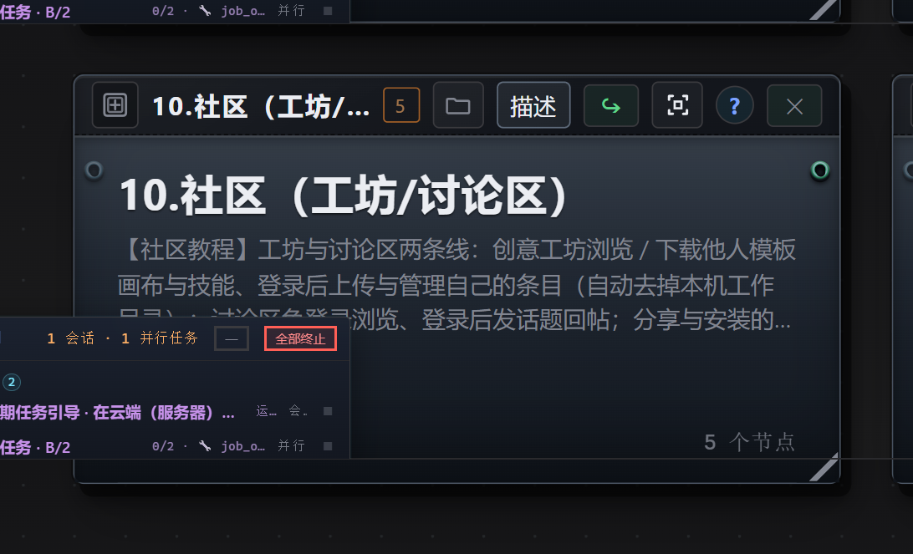
10.1 创意工坊：用别人的东西
- 顶栏「创意工坊」，在「模板 / 技能」两栏间切换；可按标签、热度（下载量 / 点赞量）、最新排序，也支持搜索。
- 先只读预览，确认后「下载到本机 / 下载」。
- 模板 = 一张可导入的画布；导入时若画布引用了本机没有的服务商或模型，会逐个询问并批量替换成你自己的。技能 = 下载到本机技能目录后，智能节点即可
/调用；工坊有新版本需手动更新，本机副本不会自动跟着变。
10.2 创意工坊：分享自己的东西
- 先登录（上传需要登录）。
- 上传模板 = 选一张本机画布；上传技能 = 选 / 粘贴
SKILL.md（可用「使用本机技能」载入已有技能，需含 frontmatter 的name，kebab-case）。 - 填标题、介绍、标签、版本；在「我的」里管理自己的条目、查看下载与点赞。
上传模板会自动去掉画布与本机工作目录相关的信息，不会把你的本地路径带出去。同一技能名只有上传者本人能更新；重选文件会覆盖工坊正文（需填新版本）。
10.3 讨论区与提问模板
讨论区用来提问、报错求助、分享作品与提功能建议；入口在右上角，它是按需下载的组件（不在安装包里），首次点会提示下载。免登录即可浏览，登录后可发话题、回帖、改话题状态；话题长期保留，方便以后搜到同样的坑。
提问模板：① 我想要什么（目标一句话）② 我做了什么（节点标题 / 画布里的那一支、改了哪些参数）③ 实际发生了什么（报错原文，别只截一半图）④ 已试过什么（排除掉哪些可能）。带上最小复现，比贴一整段日志有用得多。
10.4 安装别人的东西（1-2-3）
- 在工坊里预览确认，再点「下载到本机 / 下载」。模板 → 导入为一张新画布；技能 → 写进本机技能目录。插件 / 讨论区这类组件是「按需下载」的，不在安装包里；装完引擎会重启，先等没跑完的任务结束。
- 导入他人画布后逐项检查：服务商与模型、保存路径、有没有需要本地后端的节点（H3 / Music 3 / TTS / llama）；引用了本机不存在的服务商 / 模型时会逐个询问并批量替换。
- 缺插件 / 缺后端的节点会跑不起来 —— 先看节点说明再点 ▶。
升级与卸载：插件与素材装在应用配置数据目录下，应用升级后会保留；安装 / 卸载插件会先弹确认，卸载只影响该插件，核心能力不受影响，用户插件可以再次挂载。
10.5 社区安全与礼仪
- 画布先在空目录里试跑，别在主力项目上直接开。
- 报错提问带最小复现，而不是贴一整段日志。
- 别人的作品注明出处，不要当自己的原创发布。
- 涉及他人隐私、肖像、版权的素材，没有授权不要上传。
- 分享前先清密：不要含有 API Key、私有路径、客户资料。
11. 其他（操作技巧与常见问题）
这一章可以当便签用：遇到「点了没反应」「结果没落盘」这类问题，先来这里看一眼。
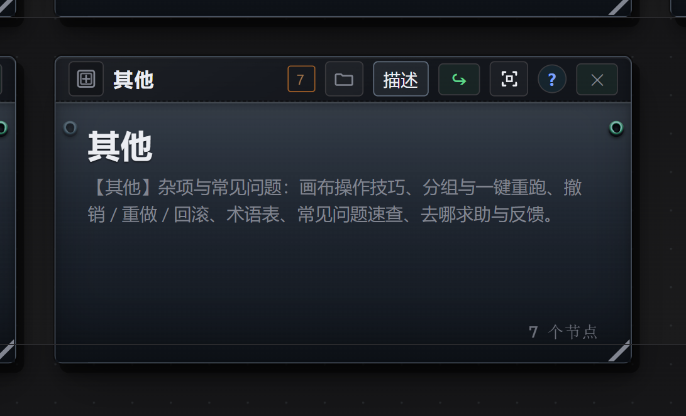
11.1 画布操作技巧
- 双击超级节点看里面的内容，再双击空白处回到上层。
- 滚轮缩放、拖动空白平移。
- 节点上的 ▶：按连线顺序跑这一支；上游跑完下游会自动跟随（可在设置里关掉）。
- 连线即数据流：上游改完重跑，下游跟着更新。
- 拖文件进画布即成输入节点；拖图片到图像输入节点可换图。
- 用超级节点把多个节点归类，有助于提升画布渲染速度。
11.2 分组、分区与一键重跑
- 按
G分组：把一组节点打包，整组一起移动 / 缩放。 - 一键重跑：控制节点（▶）用控制线直连到每个该重跑的节点 —— 控制线不走数据，只决定「谁被触发」。
- 分区框和分组是画布注释，不影响运行。
11.3 撤销 / 重做 / 回滚
Ctrl+Z/Ctrl+Y：撤销、重做画布改动（改标题、连线、位置都算）。Ctrl+F：打开全局搜索。- 删除节点、删除画布这类动作会先弹确认。
- 撤销栈只属于你眼前这张画布；切到别的画布，撤销不会跨图。
- 保险习惯：大改之前先复制一份画布，或者把输入正文另存一份。
11.4 术语表
- 节点
- 画布的主要内容构成单位（输入 / 处理 / 保存 / 控制…）。
- 超级节点
- 把一组节点打包成一个「文件夹」，内部节点通过边界端子对外连接。
- 智能节点
- 会话型节点，自己读写文件、多步干活。
- 开发节点
- 带开发标记的超级节点，一般代表程序项目中的一个功能模块。
- 端子
- 节点的接口。
- 批量项
- 一次运行只处理一条的批量输入；「聚合模式」= 一次输入全部内容。
- 需求等待
- 等到某个文件出现才放行下游。
- 思考强度
- 模型思考链的长度档位（无 / 轻 / 标准 / 强 / 最强），越高越贵越慢，但潜在效果越好。
- 预设档
- 通过系统提示词决定思维链风格。
11.5 常见问题速查
- 点了 ▶ 没反应：看上游有没有输入、是否被「需求等待」挡住、服务商与 Key 是否配好。
- 结果没落盘：保存节点只接在普通节点后面；智能节点自己写文件，不要接保存。
- 下游没跟着更新：提示词里粘的是正文而不是
@标题，上游重跑不会更新它。 - 生成多张图 / 花了多倍钱：文生图每次只出 1 张；要多张就一个批量项一张，或调高抽卡次数。
- 音视频卡住：音、视频共享同一把显存锁，同一时间只能跑一个。
- 批量任务特别贵：检查是不是把整批 N 条又塞进了每次运行（≈N² 次调用）；要一次看全部才用「聚合模式」。
- 报错看不懂：把报错原文 + 节点标题发给右侧栏助手，它能读画布直接定位。
11.6 求助与反馈
- 画布里的疑问：直接问右侧栏助手（✦），它能看你眼前的画布，也能直接改。
- 想省事：一句话描述「输入 → 处理 → 产物格式 → 存哪」，让助手把节点搭好，你再改参数。
- 提需求 / 报 bug 的四件套：环境（系统、显卡、显存、内存；本地后端还是要 API）、你想要的结果、实际发生了什么（报错原文 / 截图）、已经试过什么。